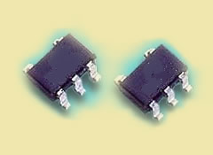
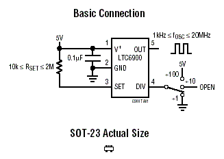
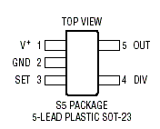
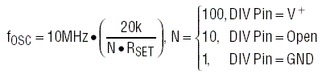
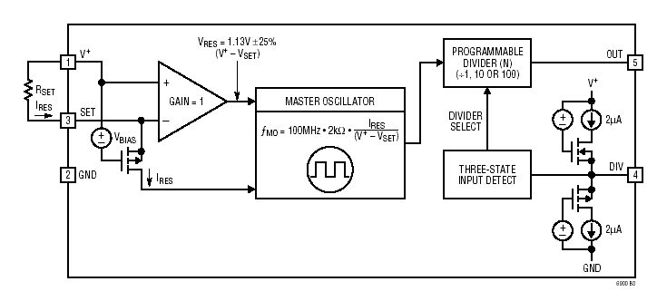

Oscillateur 1 kHz - 20 MHz — LTC6900, Linear Technology

Le LTC6900 de Linear Technology est un nouveau composant intégré dans un petit boîtier SOT-23. Il permet de réaliser un oscillateur qui génère n'importe quelle fréquence de 1 kHz à 20 MHz, avec une précision de ±0.6%, par l'ajout d'une simple résistance de 0.1% — sans quartz ni résonateur céramique. De fait, le schéma reste très simple et compact :


Comme le montre le schéma, il est possible de diviser la fréquence par 100 ou par 10. La formule qui permet de calculer la valeur de la résistance est la suivante :

L'architecture interne du composant assure le maintien de la précision sur toute l'étendue des variations de température et de tension, à moins de 0.004%/°C et 0.05%/V.

Le circuit s'alimente jusqu'à 6V, et le courant consommé est de 500 µA pour un signal de sortie de 3V à 3 MHz.